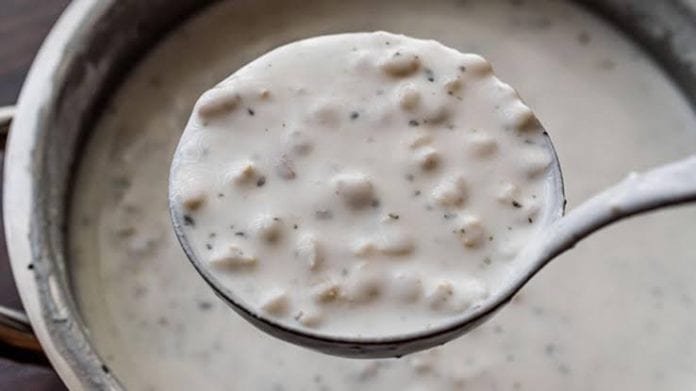
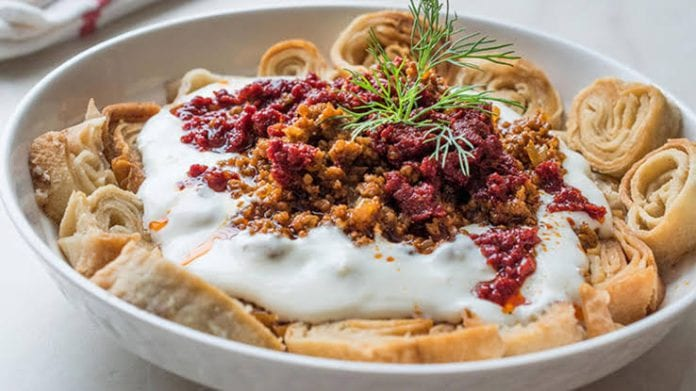

Ayran Aşı
Türk yemekleri arasında ön plana çorbalar arasında ayran aşı simgemiz haline gelmiş lezzetlerden. Hem besleyici hem de doyurucu oluşuyla ünlü bu çorba özellikle yaz aylarında sıklıkla yapılıyor. Pişirildikten sonra buzdolabında soğumaya bırakılan çorbayı afiyetle tüketebilirsiniz.
Erzincan Döneri
“Döner, her yerde dönerdir.” diyorsanız muhtemelen henüz Erzincan dönerini yemediniz. Yaprak dönerin en lezzetli halinin bulunduğu Erzincan’da döner yedikten sonra bir daha başka bir yerde yemek istemeyeceksiniz.
Etli Üzüm Yaprağı Sarma
Erzincan’ın meşhur üzüm bağlarında Mayıs aylarında toplanan yaprak salamura yapılıyor. Erzincan’ın meşhur asma yaprağı ile yapılan sarmaların tadı ise bir başka. Minik minik sarılan sarmalar içerisinde kıyma da ekleniyor. Diğer etli sarmalardan farkı ise güveçte pişirilmesi ve güvecin içine erik kurusu kemikli et gibi malzemelerin de eklenmesi.
Babikko
Erzincan’ın yöresel yemekleri içerisinde güçlü bir yer tutan meşhur babikko yemeğini Doğu Anadolu’nun pek çok şehrinde görebilmeniz mümkün. İlk bakışta kalori bombası bir yemek olarak anlaşılsa da tadına bir kez bakanlar ne kaloriye önem veriyor ne de kiloya…
Aslında yemeğin içerisindeki pek çok malzemenin sağlık açısından birçok faydası var. Hamurdan yapılan etsiz sarımsak soslu bir mantı olarak düşenebileceğiniz bu lezzet, Erzincan mutfağının vazgeçilmezlerinden biri olarak gösteriliyor.
Kelecoş
Pek çok yörede farklı yorumları bulunan kelecoş, Erzincan ve Elazığ’da bu isimle alınırken Erzurum’da Keleçaşı, Ağrı, Van ve Hakkari illerimizde Keledoş ismiyle anılmaktadır. Malzemeler de ufak tefek değişiklikler görülse de yemeğin lezzeti tüm illerde aynıdır. Özellikle kırsal kesimlerde hazırlanan etli bir hamur işi yemek olan kelecoşu Erzincan’ın birçok restoranında bulabilirsiniz.
Haşıl
Erzincan usulü haşılın pek çok çeşidi var diyebiliriz. Sütlü haşıl, pekmezli haşıl, ballı haşıl ve yağlı haşıl olmak üzere 4 değişik tarif ile hazırlanan haşılın ana malzemeleri aynı olmakla birlikte son dokunuş olarak tercihe bağlı bal, süt, pekmez veya yağ döküldüğünden bu isimleri almıştır.
Tarifte yer alan malzemeler ise un ve sudur. Diğerlerinden farklı olarak sütlü haşıl içerisine aş yarması da eklenir.
Keşkek

Erzincan’da keşkek, bol etli bir lezzet olarak sofraları süslüyor. Genelde ana yemek yerine tüketilen keşkeğin farklı yorumları da yok değil. Bazı köylerde daha farklı usulle yapılırken restoranlarda aşurelik buğday ve kuzu gerdanı kullanılarak hazırlanıyor. Tadı ise parmak ısırtan cinsten diyebiliriz.
Siron
Doğu illerimizde adına sık rastladığımız doyurucu yemeklerden biri siron… Hazır yufka, kavrulmuş kıyma ile hızlı ve basit bir şekilde hazırlayabileceğiniz yemeği, yalancı mantı olarak da nitelendirebiliriz. Tek farkı yufkaların fırında pişirilmesi ve çıtır çıtır bir kıvam alması.
Kete
Erzincan’ın birçok yerinde ekmek yerine tüketilen kete, şehrin en ünlü hamur işi lezzeti. Hamurun içine konulan kavrulmuş un ve kıyma (isteğe bağlı) ile tadına doyum olmayan bir lezzet ortaya çıkıyor./p>
Kemah Tiridi
Erzincan’a gelip de yolu Kemah’a düşenlerin bir de bayram dönemi ziyaret edenlerin mutlaka tatması gereken Kemah Tiridi, mis gibi koyun etinin önceden hazırlanmış mayalı ve toz şekerli hamur yufkaların üzerine dökülmesinden oluşuyor. Oldukça doyurucu ve leziz yemek, halkın sıklıkla pişirdiği meşakkatli ana yemeklerden biri olarak gösteriliyor.
Erzincan Lokumu
Erzincan lokumu, görüntüsü kadar leziz ve pratik bir yöresel lezzet. Oldukça hafif bir çay yanı tatlısı olarak tüketebileceğiniz Erzincan lokumu içerisinde tereyağı, un, yumurta, zeytinyağı gibi malzemeler yer alıyor. Fırında bir süre pişirildikten sonra ise bol pudra şekeri dökülerek servis ediliyor.
Erzincan’dan Satın Alabileceğiniz Yöresel Ürünler
Erzincan Tulum Peyniri
Şehrin en bilinen lezzetlerin bir diğerinde sıra; Erzincan tulum peyniri… Kahvaltıların vazgeçilmezi olan peynirin ünü Erzincan sınırlarını aşsa da, en lezzetlisini Erzincan’da yiyeceğinizi söyleyebiliriz. Kuru lavaşı biraz ıslatarak içine tulum peyniri koyarsanız, yeni bir kahvaltı alışkanlığı kazanmanız işten bile değil.
Dut Pekmezi
Erzincan kahvaltılarında sıklıkla göreceğiniz dut pekmezi, bölgenin meşhur yöresel lezzetlerinden biri. Özellikle Kemaliye ilçesi ve ilçeye bağlı köylerde dut toplama mevsimi geçtikten sonra yöre kadınları tarafından yapımına başlanan pekmez, kavanozlanarak raflarda yerini alıyor.
Erzincan pekmezini şehir içinde satın alabileceğiniz birçok noktanın yanı sıra bulunduğunuz ilden, merkezi Erzincan’da olan çeşitli online organik ürün satış sitelerinden sipariş edebilmeniz mümkün. Sabah aç karına iki kaşık dut pekmezinin doğal bir antioksidan kaynağı olmasının yanı sıra kansızlık ve pek çok rahatsızlığa iyi geldiği biliniyor.